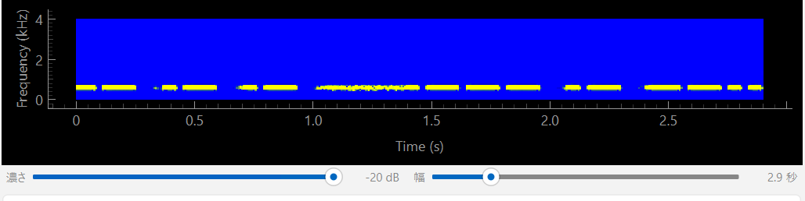

受信する
きれいに読ませる鍵は 2 つだけです。入力レベルを合わせることと、 ノイズをデコーダの手前で止めること。
モードの選び方
CW は同じ符号でも、欧文と和文で表す文字が違います。受信する内容に合わせて選びます。 受信中でも切り替えられます。
| モード | 使う場面 |
|---|---|
| 欧文 | 英数字・記号の通信（DX、コンテストなど） |
| 和文 | カナの和文通信 |
| 自動 | 欧文と和文が混ざる交信。ホレ（和文開始）を受けると和文へ、 ラタ（和文終了）を受けると欧文へ切り替わります |
いま自動がどちらで動いているかは、画面いちばん下の帯に 自動(現在:欧文) の形で出ています。
実際の交信では、欧文の前置き（JA1ABC DE JH0ILL …）に続くホレを
モデルが取り逃すことがあります。そのため
和文にしかない符号を見たら切り替えるという別の道も用意してあります
（設定のデコードタブで切れます）。
ホレを取り逃しても和文は読めますが、ホレの文字自体は画面に出ません。
入力レベル
右端の縦のレベルメータを見ながら、受信機やパソコンの音量を合わせます。 信号が来たときに中ほどまで振れるくらいが目安です。 小さすぎると拾えず、振り切ると歪みます。
細かいばらつきは気にしなくて構いません。内部の特徴量抽出が自動で正規化します。
スケルチ
レベルメータの橙色の破線がスケルチのラインです。 入力がこの線より下のときは「無音」とみなし、デコーダには無音を流します。 メータ横の縦スライダで動かせます（−60〜0 dB、下端の −60 で実質無効）。 いまの値はスライダの下に橙色の数字で出ます。
メル特徴抽出は音量の情報を捨てるため、無信号のノイズでも増幅されて文字になります。 30 秒の無信号で 38 個ものトークンが出た実測があり、しかも 確信度は 0.6〜0.7 と高いので、確信度の閾値では防げません。 デコーダの手前で止めるしかありません。
初期値は −25 dBFS です。判定は BPF を通した後のレベルで行います。 生の入力では、無信号時 −28 dBFS・信号時 −40〜−10 dBFS と範囲が重なって分けられませんが、 ノイズの大半は帯域の外にあるので、BPF の後なら差が開きます。
ノイズは状況で変わるので、受信しながら動かして構いません。 下げすぎるとノイズを拾い、上げすぎると弱い信号が丸ごと落ちます。
帯域通過フィルタ（BPF）
CW のトーン付近だけを通し、それ以外を落とします。混信やノイズが多いときに効きます。 設定の入力タブにあります（初期値は ON）。
| 設定 | 目安 |
|---|---|
| 中心周波数 | 受信している CW トーンの高さに合わせます（初期値 600 Hz） |
| 帯域幅 | 狭いほどノイズに強い反面、合わせ込みがシビアになります。 初期値 400 Hz。混信が多ければ 250 Hz 程度まで狭くします |
スペクトルを見ながら、CW の横線が通過帯（中心 ± 帯域の半分）に収まっているかを 確かめると合わせやすくなります。
受信機が別の PC にあるとき、送り出し側は生の音をそのまま流します （こちら側の BPF 設定がそのまま効くようにするため）。 受け取る側で BPF を切ると、読み取りが崩壊します（誤り率 97% の実測があります）。
スペクトルの見方

濃さ を右へ動かすほど弱い音が黒く落ち、符号がくっきりします。 幅 を狭くすると符号が横に伸びて、点と線の区別が見やすくなります。 符号がそれらしく見えるところに合わせてください。値は次回起動時にも残ります。
録音する
受信中（■ 停止 と表示されている状態）に ● 録音開始 を押します。
もう一度押す（■ 録音停止）と保存されます。
保存先は設定の入力タブで決めます（初期値は
data/real）。 デコード結果のテキストとモード情報も一緒に残ります。
受信を始めたら自動で録り始める設定もあります（受信を自動で録音する、初期値は OFF）。
WAV をあとから読ませる
録音済みの WAV や手元のファイルは、アプリを使わずコマンドで読めます。 こちらの方が精度は高めです。その場で返す必要がないぶん、前後の文脈を広く使えるためです。
python scripts/decode_user_wav.py --ckpt models/full/best_infer.pt --wav european:data/real/your_file.wav--wavはモード:ファイルパスの形で書きます （european:またはjapanese:）。--wavを繰り返せば、複数のファイルをまとめて処理できます。- 結果は画面に出るほか、
decode_result.txt（UTF-8）にも書き出されます。
オフラインでは european と japanese しか指定できません。
auto はアプリで受信しているときだけの機能です。
受信機が別の PC にあるとき
受信機を繋いだ PC から、16 kHz モノラルの音を LAN 越しにそのまま流せます。 リモートデスクトップの音声転送は使わないでください。 狭帯域の圧縮がかかり、エネルギーの 99% が 1000 Hz 以下に潰れる実測があります。
受信機側の PC で:
python scripts/audio_send.py --list # 入力デバイス一覧
python scripts/audio_send.py --device 13 # 送信開始 (Ctrl+C で終了)読み取る側の PC で:
python scripts/run_app.py --ckpt models/full/best_infer.pt --net-source 192.168.0.10この起動をすると、主画面の入力デバイスのコンボは灰色になって選べなくなります。 音の出どころが LAN に固定されるためです。
音声は暗号化せずに流します。外部へ公開するポートには割り当てないでください。
--bind で待ち受けるアドレスを絞れます。